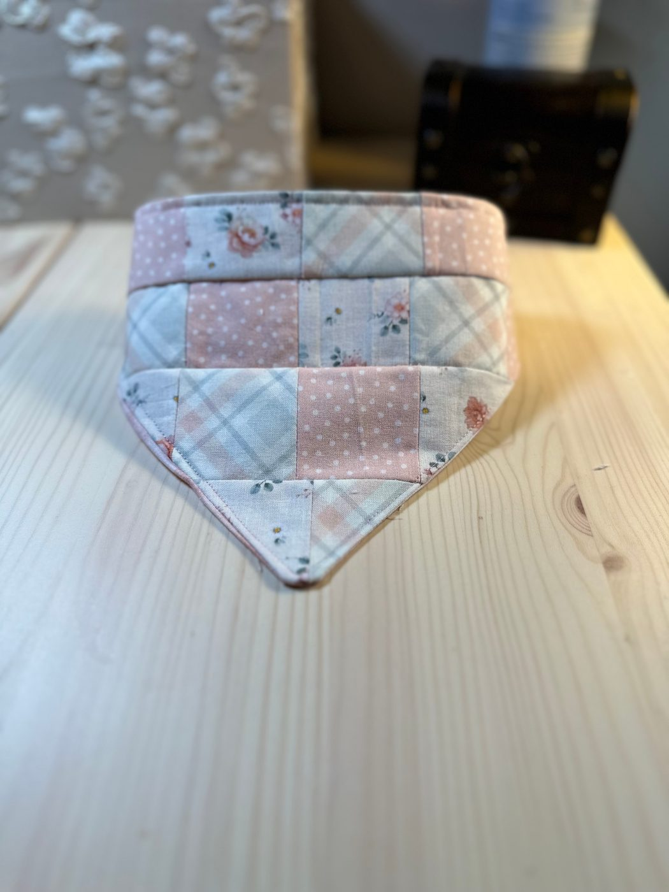

⤢ ZoomThe Quilted Court Bandana
$22.00
Two dozen little squares — blush roses, pale plaids, dotted cream, a wash of sage — pieced one at a time into something that looks like a quilt made small. It's the only patchwork piece in the shop, and for its size it takes the longest of anything I make: every seam has to meet the three around it. Reversible: turn it round and it's Blushing Linen, a soft dusty pink, quiet enough for the days the patchwork would be too much. The top is an elasticated channel, so it stretches over the collar they already wear — nothing to tie, nothing to work loose halfway round the block.
Size Medium · fits a 13″–18″ neck · REVERSIBLE — hand-pieced patchwork one side, Blushing Linen the other · elasticated channel stretches over the collar · other sizes made to order · machine wash cold, hang to dry.
Ships from San Antonio, Texas · shipping & returns · San Antonio local? Choose Local pickup at checkout.
Pairs well with
One shipping fee per order, however much you add — and orders over $50 ship free.